AI & Machine Learning
From the first machines to autonomous agents
What we will cover
- What is AI? Definitions, machine learning, neural networks
- A short history: pioneers, winters and the deep learning boom
- Inside a language model: tokens, attention, probabilities
- From chatbot to agent: tools, memory, autonomy
- Coding with AI: what it changes, what it breaks
- The impact of AI on work, science and power
- A new era? The Riemann hypothesis and the future of research
1. What is AI?
Before “AI”
“AI” is today’s buzzword. It follows a long list of others:
- data mining
- big data
- data science
- machine learning
- deep learning
The words change quickly, the ideas much less.
So what is AI?
The ability of a machine to perform tasks that would require intelligence if done by a human.
Nothing in this definition requires a computer.
How old is AI?
With this definition, the automatic servant of Philon of Byzantium (3rd century BC) is already a form of AI!
Place a cup in its hand and it pours wine, then water.
Replica by Kostas Kotsanas, photo by Eunostos, CC BY-SA 4.0.

The servant of Philon (video)
If the video does not start: watch it on YouTube
AI in computer science
Today, “AI” usually means a subfield of computer science. The machine is now a computer running a program: it takes an input and produces an output.

Algorithm or program?
An algorithm is a list of instructions to reach a goal. A cooking recipe is an algorithm! 🧁
A program is a set of instructions a machine can execute. It may run algorithms, and do other things too.
What is machine learning?
Instead of writing the rules, we show examples and the program adjusts itself.
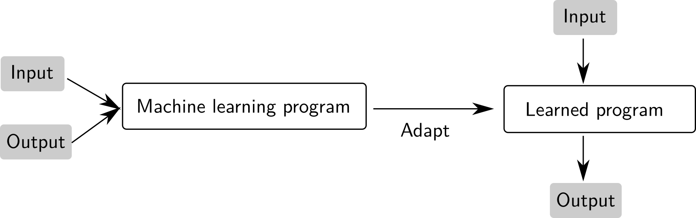
Three ways to learn
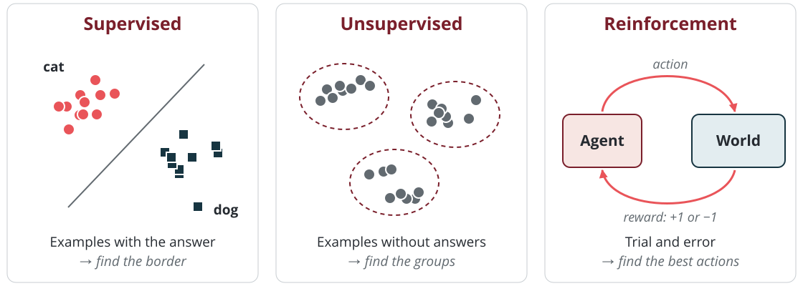
Which approach for which problem?
| Supervised | Unsupervised | Reinforcement | |
|---|---|---|---|
| Data | Examples + answers | Examples only | Rewards from actions |
| Goal | Predict the answer | Discover a structure | Choose the best actions |
| Methods | Regression, decision trees | K-means, PCA | Q-learning |
| Examples | Spam, house prices | Customer groups | Games, robots |
Language models combine them: they predict hidden text (self-supervised: the text itself is the answer), then learn from good examples, then from rewards.
AI, machine learning, deep learning

An artificial neuron
Multiply by the weights, add everything and the bias, squeeze. Umbrella?
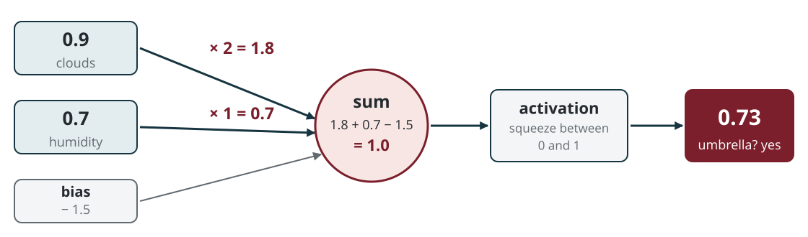
The weights (2 and 1) and the bias are the parameters. Training finds them.
A network that learns
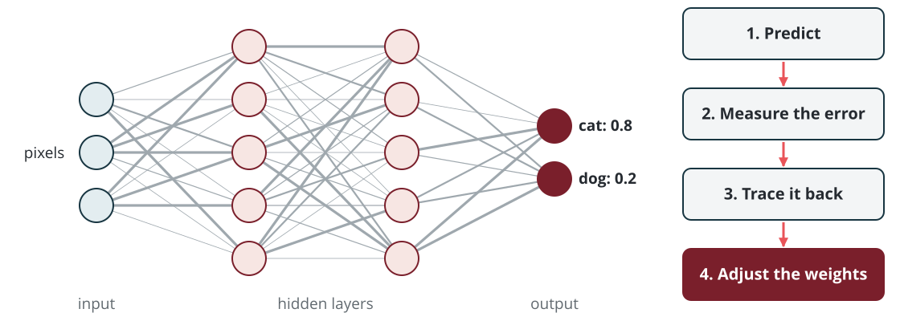
Step 3 is backpropagation. Repeated over millions of examples, it reduces the error little by little. Many hidden layers: this is deep learning.
2. A short history
Six pioneers
AI was not born in 2020. Let’s meet six people who made it possible.

Jacquard
1752–1834

Babbage
1791–1871

Lovelace
1815–1852

Turing
1912–1954
Von Neumann
1903–1957

Dijkstra
1930–2002
Joseph-Marie Jacquard (1752–1834)
In 1804, Jacquard patents a loom programmed by punched cards: change the cards, change the pattern.
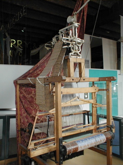
Punched cards: photo by Stephencdickson, CC BY-SA 4.0.

Machines and work: the Canuts
The silk weavers of Lyon revolt in 1831 and 1834. The looms produce more, but the price paid for their work keeps falling.

Charles Babbage (1791–1871)
In 1837, Babbage describes the Analytical Engine, the first design of a general-purpose computer. It was never completed.

Ada Lovelace (1815–1852)
In 1843, Lovelace publishes “Note G”, often considered the first computer program: it computes Bernoulli numbers.

Alan Turing (1912–1954)
In 1936, Turing imagines a universal machine, able to run any algorithm. In 1950, he asks: “Can machines think?”

John von Neumann (1903–1957)
In 1945, von Neumann describes the architecture our computers still use: program and data share the same memory.
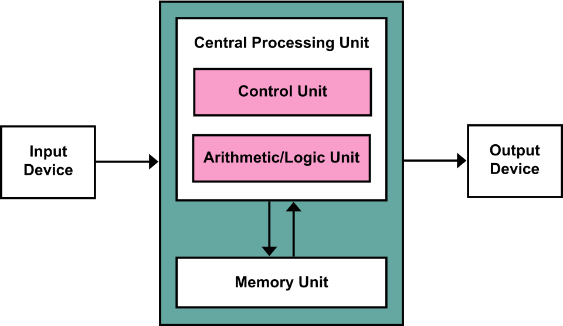
Edsger Dijkstra (1930–2002)
In 1956, Dijkstra devises his shortest path algorithm, published in 1959 and still used everywhere.

Seventy years in one picture
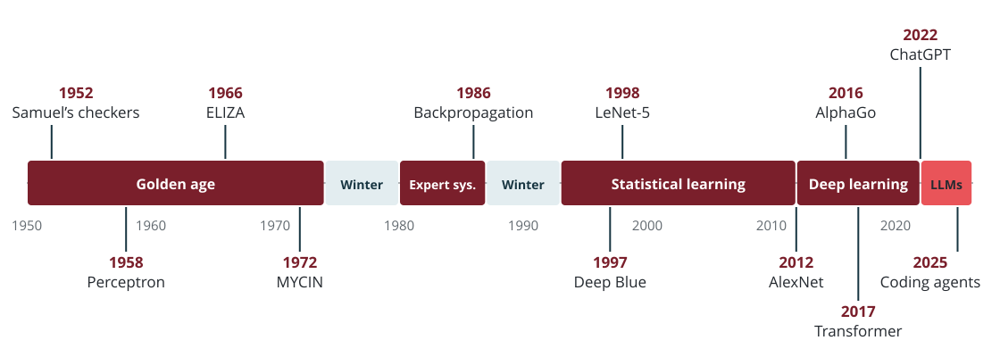
Two families of AI
Symbolic AI
Humans write the rules.
If it rains, the ground is wet.
If the ground is wet, the grass grows.
So if it rains, the grass grows.
Easy to explain, hard to extend.
Machine learning
The machine finds the rules in data.
10,000 photos of cats
10,000 photos of dogs
So this new photo is a cat (97%).
Powerful, but harder to explain.
Symbolic AI in action
- MYCIN (1970s): hundreds of medical rules to suggest antibiotics
- Expert systems (1980s): the knowledge of specialists turned into rules
- Deep Blue (1997): beats Garry Kasparov at chess
No learning from examples here: experts and fast computation do the job.
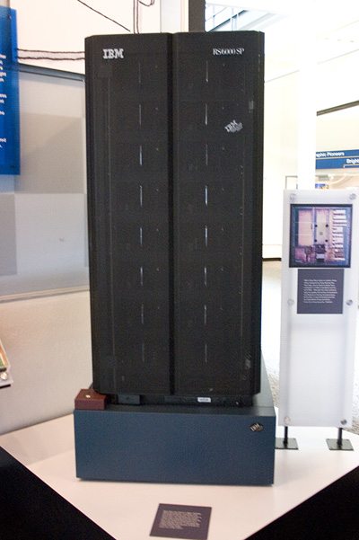
Deep Blue, photo by James the photographer, CC BY 2.0.

The first programs that learn
1952: Arthur Samuel starts a checkers program that will improve by playing against itself.

1958: Frank Rosenblatt presents the perceptron, ancestor of neural networks.
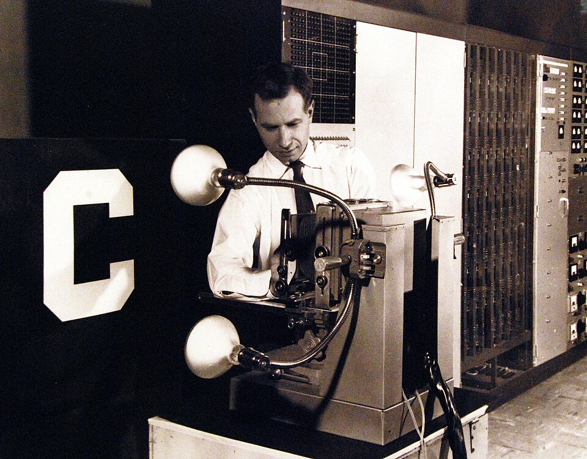
Mark I Perceptron: National Museum of the U.S. Navy, public domain.
_(20897323365).jpg){kind=link}
Promises and winters
“Within a generation, […] the problem of creating artificial intelligence will substantially be solved” (Marvin Minsky, 1967). Twice, the money stopped.
| Period | What happened |
|---|---|
| 1956–1974 | Enthusiasm: the field gets its name and its first successes |
| 1974–1980 | First winter: promises not kept, funding cut |
| 1980–1987 | Expert systems: AI enters companies |
| 1987–1993 | Second winter: too expensive, too rigid |
Ideas were often right, but data and computers were missing.
1990s–2000s: learning from data
- AI moves from rules to statistics
- Simple, analysable models (linear models, SVM)
- First real uses: reading cheques, filtering spam
- Netflix recommends films with Cinematch (2000)
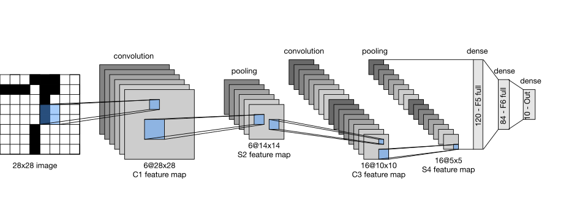
LeNet-5 (1998) reads handwritten digits.
LeNet-5 architecture: Wikimedia Commons.
2012: the turning point
A deep neural network, AlexNet, wins the ImageNet challenge by a wide margin.

Ilya Sutskever, Alex Krizhevsky and Geoffrey Hinton
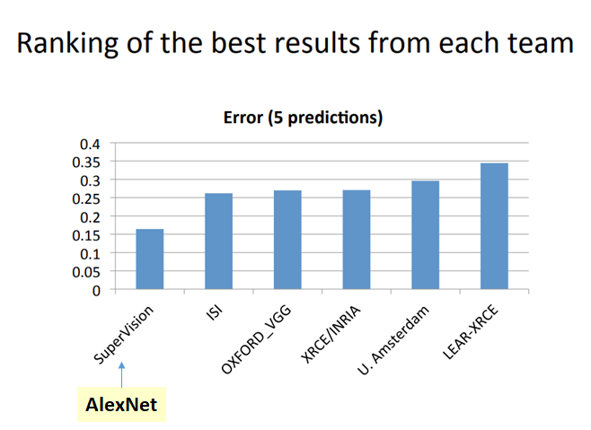
Why does deep learning work now?
Large datasets
Images, text and video from the web

Computing power
GPUs do thousands of operations in parallel

Software
Open-source frameworks for everyone
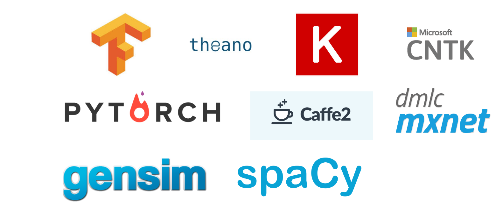
The “godfathers” of deep learning
They kept working on neural networks during the winters, and received the Turing Award in 2018.
Geoffrey Hinton
Yann LeCun
Yoshua Bengio
Seeing
Classify, detect and segment images: photos, medical scans, roads…
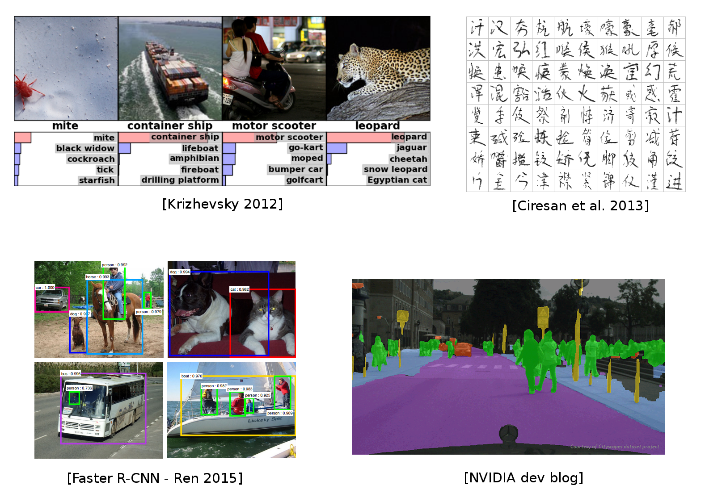
Creating images
From a sentence to a picture: DALL-E (2021), Imagen, Midjourney and Stable Diffusion (2022).
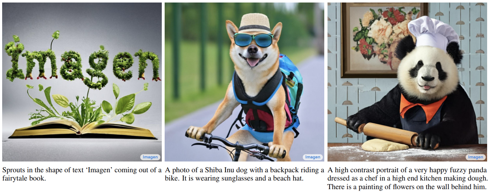
Speech and sound
- Transcription: Whisper
- Voice: VALL-E, voice assistants
- Music: Jukebox, Suno
WaveNet (2016) generates sound one sample at a time. Language models do the same with text!

Games
Learning strategies through self-play: AlphaGo, OpenAI Five, MuZero.
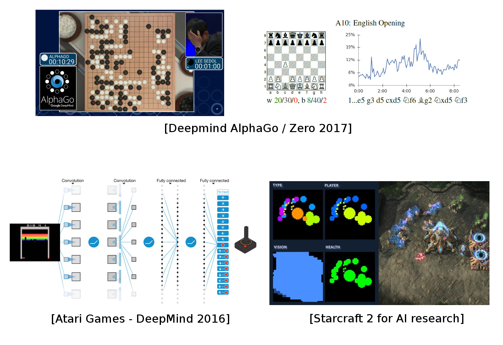
Biology
AlphaFold predicts the 3D structure of proteins from their sequence.
A work of years in the laboratory can take minutes.
Nobel Prize in Chemistry, 2024.
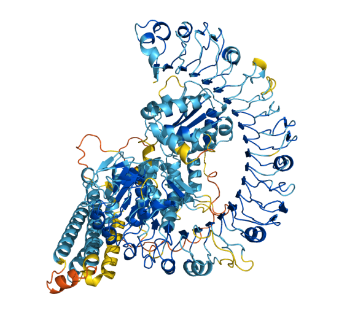
Language
| Year | Models | What was new |
|---|---|---|
| 2017 | Transformer | The architecture: Attention Is All You Need |
| 2018–2020 | BERT, T5, GPT-3 | Training on huge amounts of text |
| 2022 | ChatGPT | A conversation anyone can use |
| 2023 | GPT-4, Claude, Llama, Gemini | Competition, open models, images |
| 2024–2025 | o1, DeepSeek-R1 | Models that “think” before answering |
| 2025–2026 | Claude Code, Codex… | Agents that act |
3. Inside a language model
What is an LLM?
A Large Language Model is a program trained to predict the next piece of text.
Everything else (chatting, translating, summarising, coding) builds on this ability.
The big picture
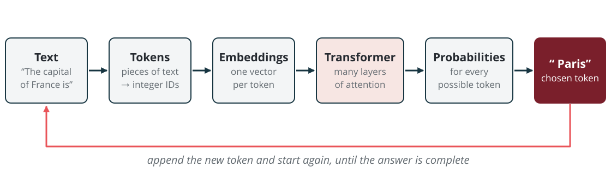
We will now open each box.
Tokens: cutting the text
A model does not read words. It reads tokens: whole words, pieces of words, punctuation.
Large4532 Language982 Models18273 are527 powerful8147.13
Each token has a number (illustrative here). The model only sees the numbers.
Why do tokens matter?
- The price of an API is counted in tokens
- The memory of a conversation is limited in tokens
- Some languages need more tokens than English to say the same thing
- It explains odd mistakes: the model sees chunks, so counting letters in a word is hard
Embeddings: giving meaning to numbers
Each token becomes a vector: a long list of numbers learned during training.
Related meanings get nearby vectors.
A vector is not a dictionary definition: its numbers rarely have a simple meaning.
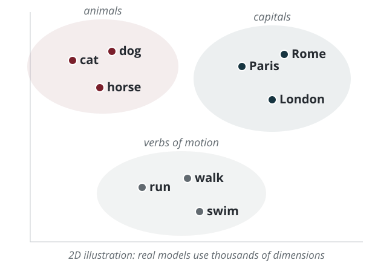
Attention: using the context
What does “it” refer to? Each token looks at the others to find out.
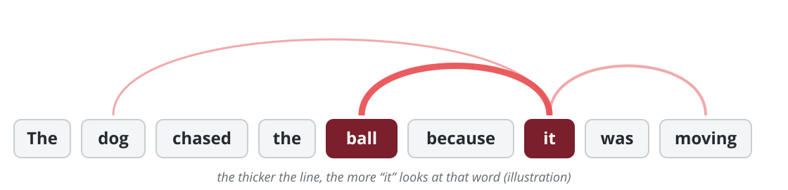
Order matters too: the dog bites the man is not the man bites the dog. The model also encodes the position of each token.
The Transformer
- Introduced in 2017 by Google researchers: Attention Is All You Need
- A stack of identical blocks, with different learned values
- GPT-3 has 96 of them
- Computes in parallel, so it scales very well
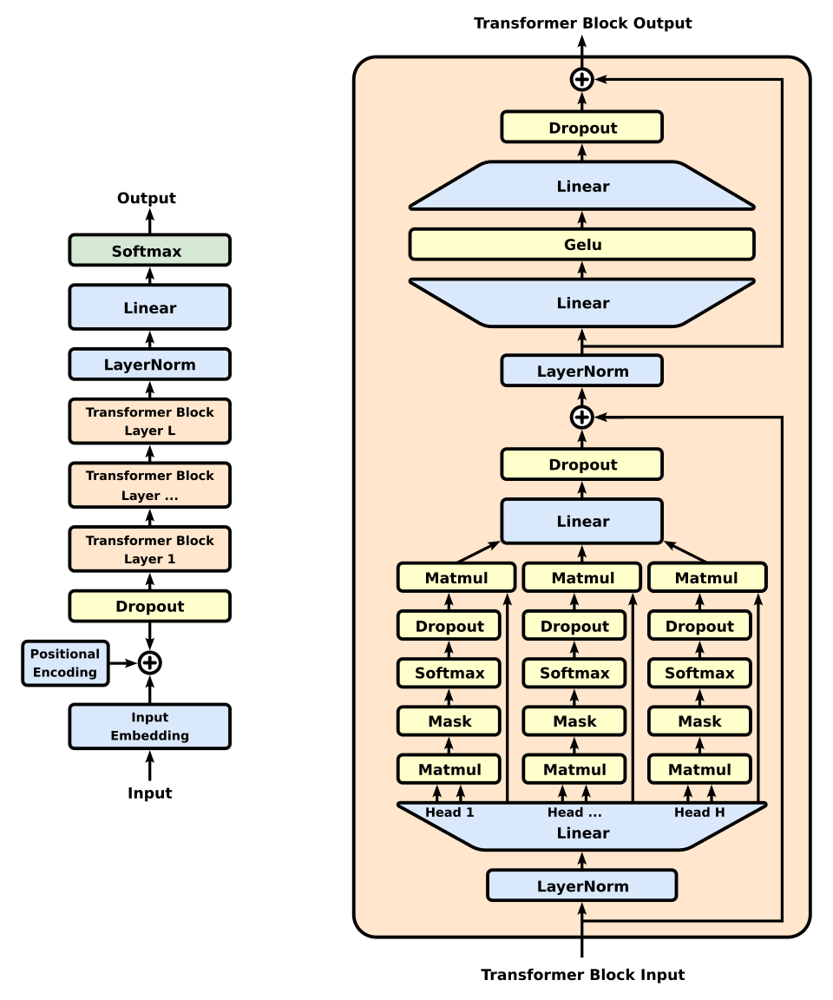
GPT architecture: Wikimedia Commons.
What does “7B” mean?
Parameters are the numbers adjusted during training. “7B” means 7 billion of them.
| Model | Parameters |
|---|---|
| FunctionGemma (used in our practical work) | 0.27 billion |
| GPT-3 (2020) | 175 billion |
| Llama 3.1, largest version (2024) | 405 billion |
| DeepSeek-R1 (2025) | 671 billion |
| GPT-4, Claude, Gemini Pro | not published |
More parameters do not automatically mean better answers.
From scores to probabilities
The model gives a score \(z_i\) to every token of its vocabulary. Softmax turns the scores into probabilities:
\[P(\text{token}_i) = \frac{e^{z_i}}{\sum_j e^{z_j}}\]
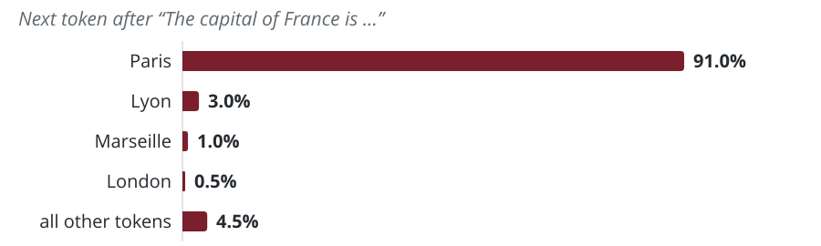
Choosing the next token
| Strategy | Rule |
|---|---|
| Greedy | Always take the most probable token |
| Temperature | Make the distribution sharper or flatter |
| Top-k | Keep only the k most probable tokens |
| Top-p | Keep the smallest group whose total reaches p |
They can be combined. This is why the same question can give two different answers.
Temperature
\[P(\text{token}_i) = \frac{e^{z_i/T}}{\sum_j e^{z_j/T}}\]
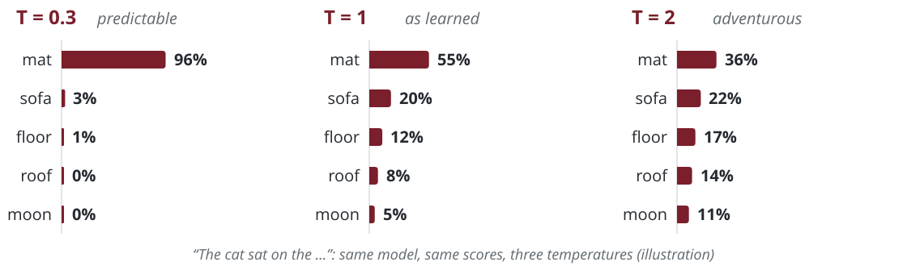
One token at a time
The answer is generated autoregressively: each new token is added to the text, then everything starts again.
It stops at a special end token, or when a length limit is reached.
The context window
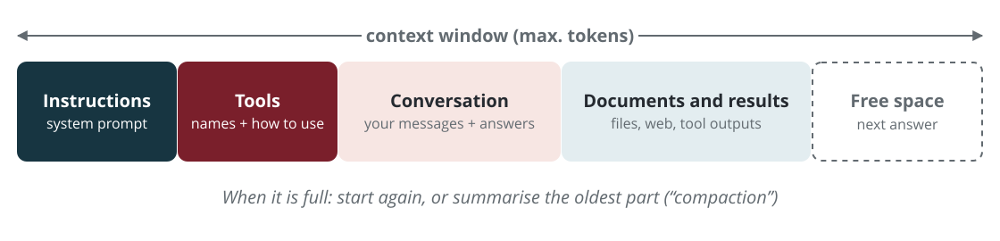
In 2020, about 2,000 tokens. In 2026, 1 million or more. Outside this window, the model sees nothing.
The model does not receive the tools themselves, only a text that describes each one.
How is a model trained?
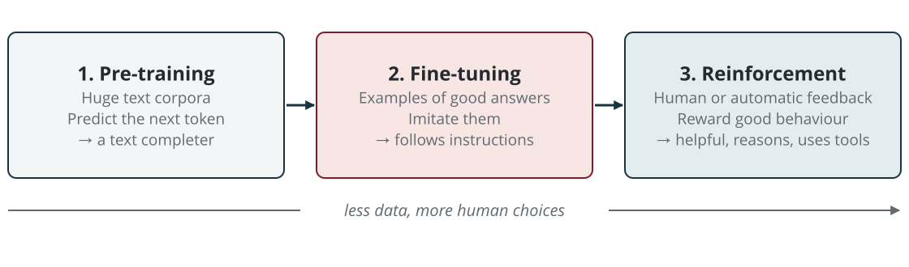
Training or inference?
Training
- Changes the parameters
- Weeks or months
- Thousands of GPUs
Inference
- Uses the parameters
- A few seconds
- One question at a time
Talking to ChatGPT, Claude or a local model with Ollama is inference: the model does not learn while answering you.
GPU cluster, photo by CSIRO, CC BY 3.0.

Plausible does not mean true
An LLM can write a false sentence as fluently as a true one. This is a hallucination.
- Invented facts or references
- Knowledge that stops at its training date
- Biases from the data
- Errors, stated with confidence
Check what matters, always.
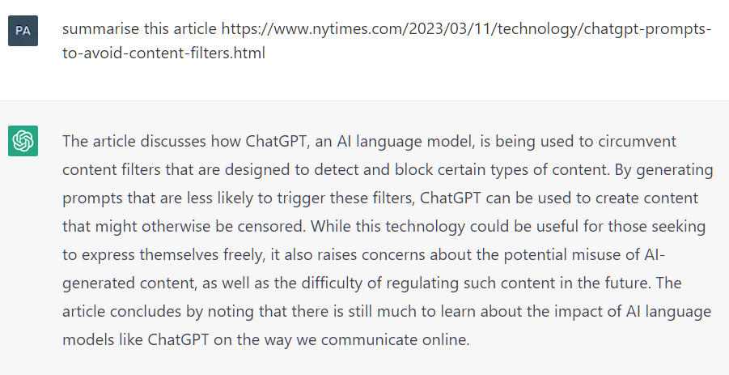
The address is fake and ChatGPT had no internet access: it invented everything. Wikimedia Commons, public domain.

Try it yourself
Open a language model in your browser and look inside:
Find a sentence where the second most probable token would change the whole story.
4. From chatbot to agent
Four years of change
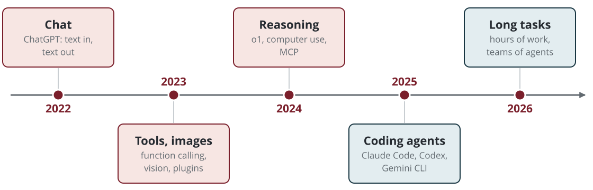
In November 2022, ChatGPT could only produce text. It had no web access, no files, no tools.
An old dream
Shakey (1966–1972) was the first mobile robot able to reason about its own actions:
- perceive the room with a camera
- plan a route
- act, then look again
Today’s agents follow the same loop, with a language model as the planner.
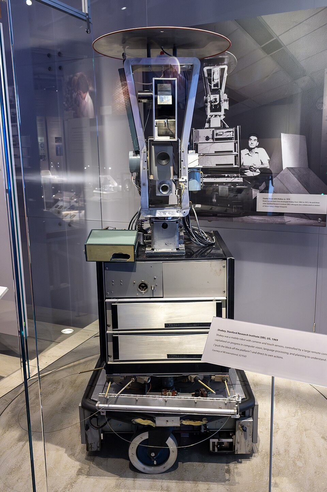
Shakey, photo by The wub, CC BY-SA 4.0.

Chatbot or agent?
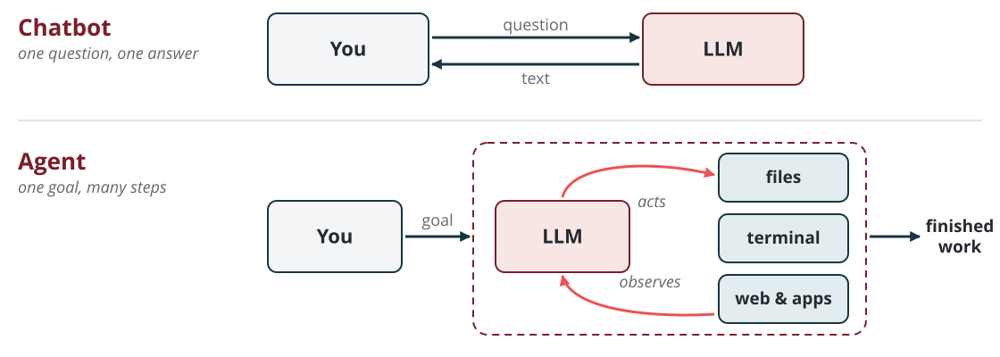
What is an agent?
Agents are “typically just LLMs using tools based on environmental feedback in a loop.”
Anthropic, Building effective agents (2024)
The loop
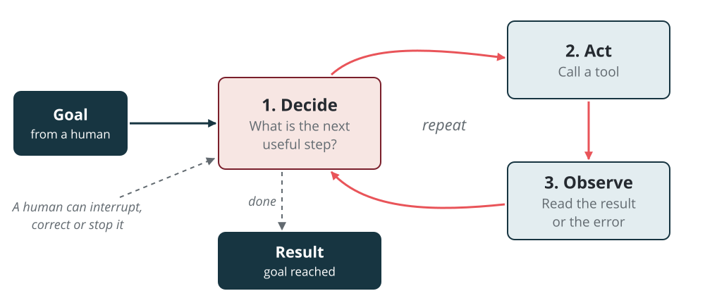
The loop, in code
messages = [goal]
for step in range(MAX_STEPS): # never loop forever
answer = llm(messages, tools) # 1. decide
messages.append(answer)
if not answer.tool_calls: # nothing left to do
break
for call in answer.tool_calls:
if is_allowed(call): # permissions
result = run(call) # 2. act
else:
result = "Refused by the user"
messages.append(result) # 3. observeanswer.tool_calls is the list of tools the model asks to use, for example read_file("notes.txt"). Empty list: it has finished.
Model + harness = agent
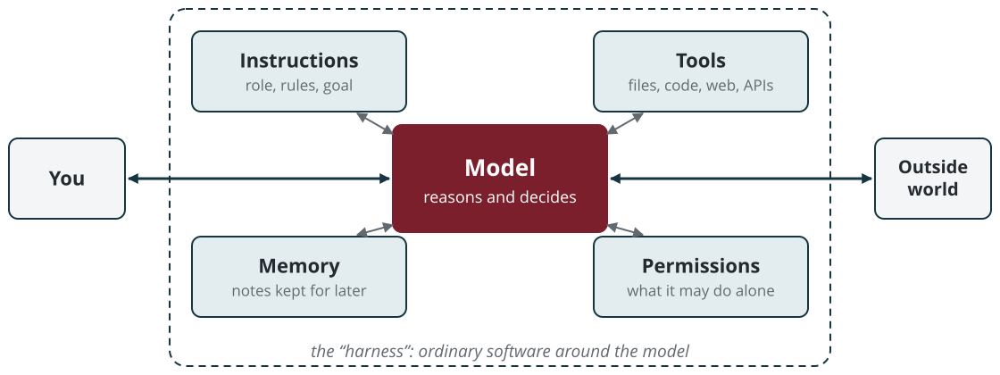
You can change the model and keep the same harness.
Tools: the model asks, the software acts
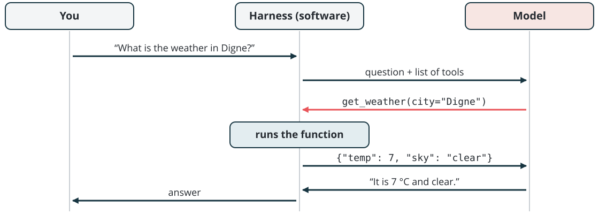
The model never runs anything itself. It writes a request; the harness decides.
Memory
Between two requests, an LLM remembers nothing. The harness creates the illusion of memory.
| Kind | How it works |
|---|---|
| Short term | The whole conversation is sent again at each step |
| Compaction | Old messages are replaced by a summary |
| Long term | The agent writes notes in files, and reads them later |
| RAG | Relevant documents are searched and added to the prompt |
More than text
A multimodal model also understands other kinds of data:
- Images: read a chart, a photo, a screenshot
- Documents: PDF files, tables, scanned pages
- Audio and video: listen, transcribe, describe
For an agent, this means seeing the screen and checking its own work.
MCP: a shared plug for tools
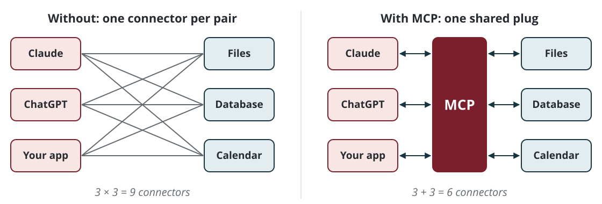
The Model Context Protocol
- Open standard published by Anthropic in November 2024
- Connects AI applications to tools and data, as USB connects devices
- Adopted by OpenAI, Google, Microsoft…
- Since December 2025, hosted by the Linux Foundation
MCP: what does it look like?
Text messages in JSON, sent to a local program or over HTTP.
1. What can you do?
The server answers:
Simplified from the MCP documentation: version and cache fields are omitted.
Is MCP safe?
MCP is a protocol, like HTTP. It is neither safe nor dangerous by itself.
It depends on:
- the server you install: do you trust its author?
- the rights you give it: read only, or write too?
- the confirmation asked before sensitive actions
Connecting a server means giving someone’s code access to your data.
Levels of autonomy
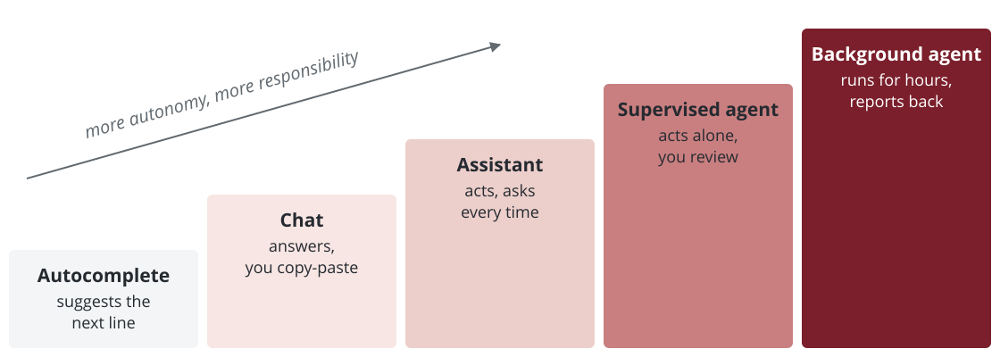
5. Coding with AI
Vibe coding
The term was coined by Andrej Karpathy in February 2025.
You describe what you want in plain language, accept the code, and hardly read it.
It is different from a developer who uses AI and reviews the result.
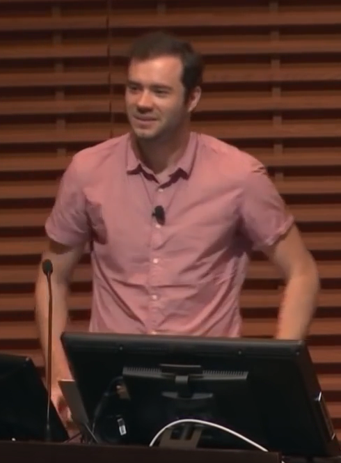
Andrej Karpathy, by Gladwin Analytics, CC BY 3.0.

What AI brings
For developers
- Repetitive code written faster
- Help with a new language
- Help to find bugs
- More time for design
For everyone
- A prototype without being a developer
- Projects that were too expensive
- Explanations on demand
What can go wrong
| Risk | Example |
|---|---|
| Security | Flaws, or a library that does not exist |
| Maintenance | Code nobody understands |
| Performance | It works, but slowly |
| Architecture | Everything in one file, duplicated |
| Legal | Copied code, unknown licence |
“Zero hand written code”
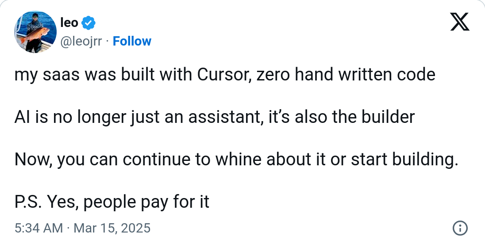
Five days later
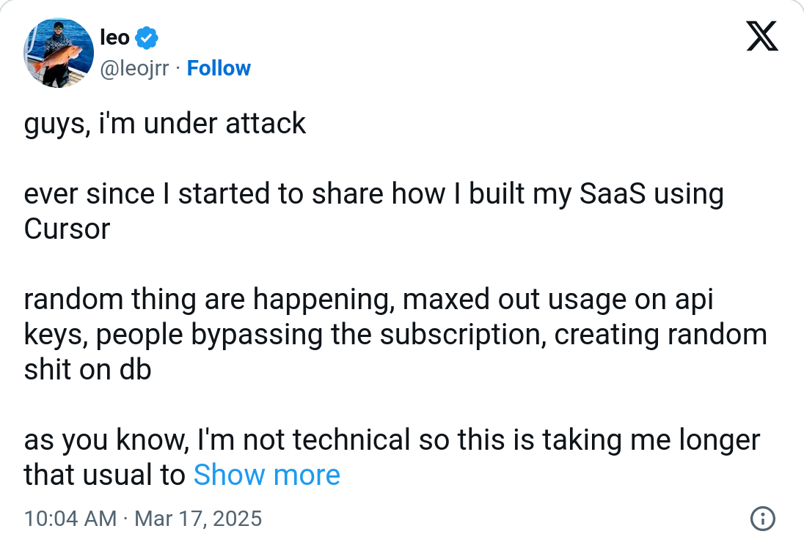
Used-up API keys, a bypassed subscription, junk in the database. The problem was not AI, but nobody understood the code.
Original posts: 4, 5. Found through Not everyone is dumb regarding AI.
Prototype or product?
A prototype ✅
Vibe coding is a good way to test an idea, or to make a small tool for yourself.
A product ⚠️
Users, personal data, payments: somebody must understand the code.
6. The impact of AI
Work
- Earlier revolutions automated manual tasks; this one reaches intellectual work
- Some jobs disappear, others appear, most change
- Remember the Canuts: who benefits?
What do the 2026 studies say?
- Stanford: no general job loss, but a 19% gap for ages 22–25 in exposed jobs (cause not proven)
- OECD (in French): AI is reshaping work, not reducing it
- French Treasury (in French): total effect still uncertain
From labour to capital?
If machines do more of the work, income may move:
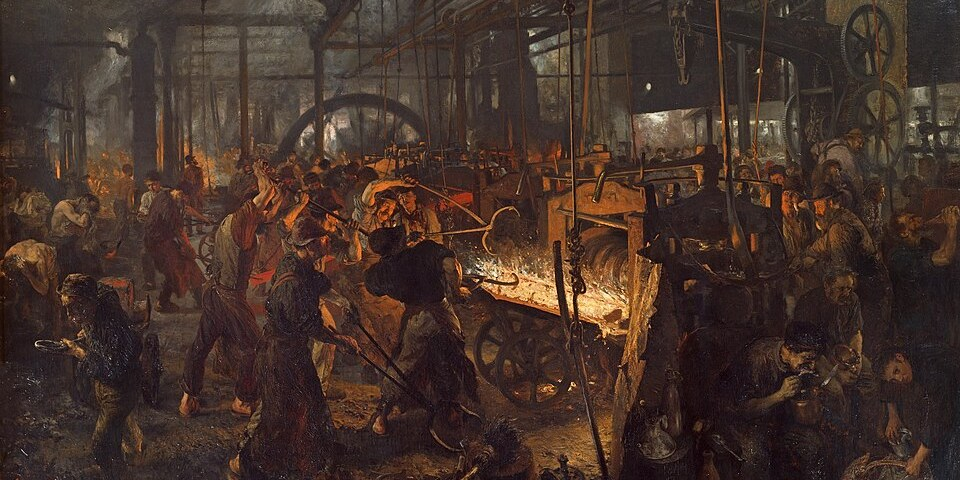
from labour: people paid for their time and skills
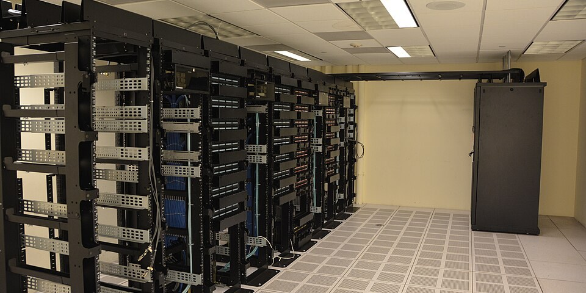
to capital: owners of models, data and computers
Will some be left behind? How should the gains be shared?
Adolph Menzel, The Iron Rolling Mill, 1872–1875. Server racks, Carl Lender, CC BY 2.0. Both cropped.

.jpg){kind=link}
Security and privacy
Defence
- Find flaws before attackers do
- Read and fix old code
- Watch a network day and night
Attack
- Find the same flaws
- Credible phishing in any language
- Deepfakes of voices and faces
And what you send to an online model leaves your computer. Never share a password or personal data without authorisation.
Sovereignty and control
Private investment in AI in 2025:
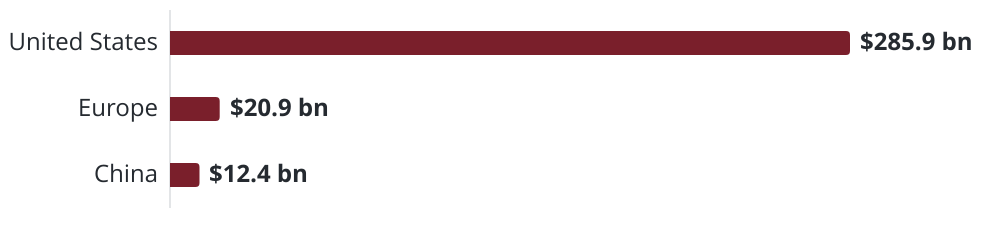
The most powerful models belong to a few companies, mostly American. Alternatives: Mistral in Europe, open-weight models such as DeepSeek or Qwen in China.
Stanford AI Index 2026. Chinese public funding is not included.
Europe: how much public money?
Nobody publishes a complete total. What we know:
| Amount | But… | |
|---|---|---|
| InvestAI (2025) | €200 billion | A target, mostly private money |
| AI gigafactories (2026) | up to €10 billion | EU + states; more than €20 billion private expected |
| Already available | about €1 billion | The rest depends on the 2028+ EU budget |
| Public contracts (2013–2024) | $3.7 billion | UK included, research grants excluded |
For comparison, the United States: $20.4 billion (2013–2024), grants included.
European Commission and Euronews (July 2026); Open Future; AI Index 2026, ch. 8.
7. A new era?
Mathematics: 722 papers in one day
On 6 October 2026, OpenAI releases 722 manuscripts written by a model.
- About half come with a computer-checked proof
- 3 were withdrawn within a day, 14 were revised
Fields medallist Hugo Duminil-Copin: “They have annihilated my field of research.”
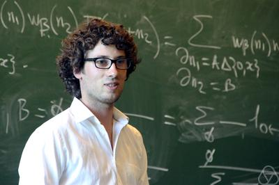
What is a proof for: being true, or being understood?
Hugo Duminil-Copin in 2014, photo by Tatjana Ruf, CC BY-SA 2.5.

Research without researchers?
Agents can read papers, write code, run experiments and draft results.
Hopes
- Faster discoveries
- Testing many more ideas
- Help for small teams
Concerns
- Too many results to verify
- Who is responsible for an error?
- How do we train young researchers?
A question from 1859
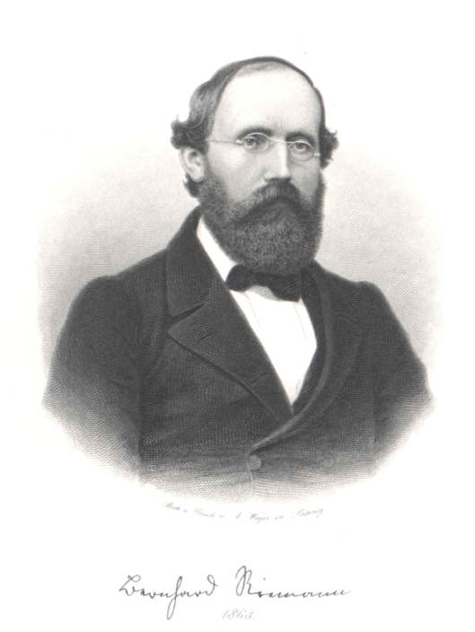
Prime numbers (2, 3, 5, 7, 11…) seem to appear at random. Bernhard Riemann links them to the zeros of a function, ζ.
His hypothesis: all the non-trivial zeros lie on one line.
\[\zeta(s) = 0 \;\text{ and }\; s \notin \{-2, -4, -6, \dots\} \;\Rightarrow\; \operatorname{Re}(s) = \tfrac{1}{2}\]
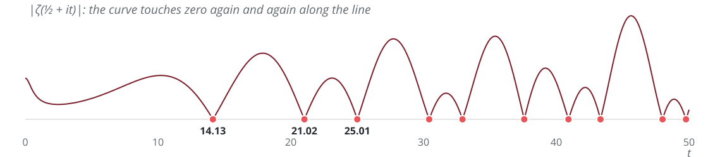
20 November 2026
Levent Alpöge, a mathematician at Anthropic, publishes a proof found with an unreleased Claude model.
- 17 million lines of Lean, in 175,187 files
- Six weeks of work in October and November
- Covers a generalised version (Dirichlet)
- For human readers: a 4-page note
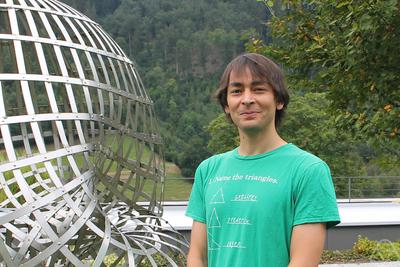
Same day: a proof “with no AI” by Alessandro Masullo, not verified.
Wikipedia, Scientific American. Levent Alpöge in 2024, photo by Marlene Ruf, CC BY-SA 2.0 DE.

Is it true?
Lean is a language in which a computer checks every step of a proof.
| Question | Answer |
|---|---|
| Is it really Riemann’s statement? | Yes: the definition of the public library Mathlib |
| Does the code compile? | Yes: rebuilt dozens of times by volunteers |
| Was the statement changed on the way? | No: verified by comparison tools |
| Do independent checkers agree? | Yes |
“We have full confidence that Alpöge’s proof […] is correct.” (Lean FRO and Mathlib Initiative, 21 November)
Is it understood?
Not yet. On 24 November, there is no complete proof readable by humans.
- Two mathematicians, helped by AI, published summaries. One is a 265-page draft that still leaves key steps unproved
- Terence Tao: “the digestion process will take some time”
- The Association for Human Mathematics contests its value: no human can answer for it
- The Clay Institute now lists the problem as “active”, not solved
A machine can tell us that it is true, without telling us why.
Terence Tao’s blog, Michael Rubinstein, Science News, The Next Web.
What does it change?
| Area | Consequence |
|---|---|
| Mathematics | Hundreds of results “true if Riemann is true” gain a foundation |
| Cryptography | Codes are not broken: most experts already assumed it was true |
| Publishing | Who reviews 17 million lines? Who is the author? |
| Researchers | Less “is it true?”, more “what does it mean?” |
| Power | The model is private, and belongs to a company |
The announcement came one day after Anthropic’s IPO: the mathematics can be checked, the publicity must be questioned.
Has the machine overtaken us?
Yes, at some tasks
- Combining “all number theory produced in the last 50 years” (F. Nuccio)
- Writing and checking millions of steps
- Never getting tired
No, not on its own
- A specialist chose the problem and steered the model
- Humans created the theories it used
- Humans decide what matters
“A very skilled AI jockey riding a very fast AI horse.” (Steven Strogatz)
Quotes: Wikipedia, from Quanta and other press articles.
Recursive self-improvement
An AI “fully autonomously designing and developing its own successor”.
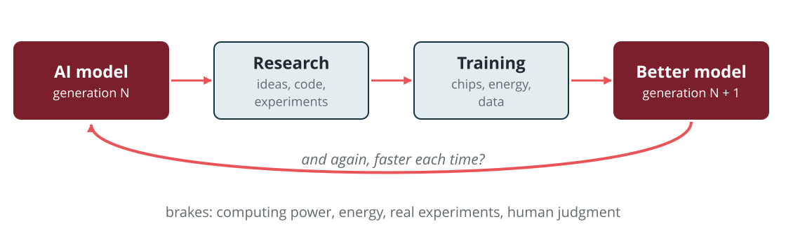
In 1965, I. J. Good already imagined an “intelligence explosion”. It has not been demonstrated today.
Definition: Anthropic, When AI builds itself (2026).
Is it happening?
Signs that it starts
- Over 80% of new code at Anthropic was written by Claude (May 2026)
- Progress there is about 1.9× faster than before on well-defined tasks (METR estimate)
- Anthropic says it reached its threshold for automated research, counting future models
Reasons to doubt
- “Not clearly accelerated on public measures”
- Humans “still supply most of the research judgment”
- Chips and energy do not improve themselves
- The best figures come from the companies
Forecasting Research Institute, review of 24 November 2026; Anthropic (2026).
Beyond our understanding?
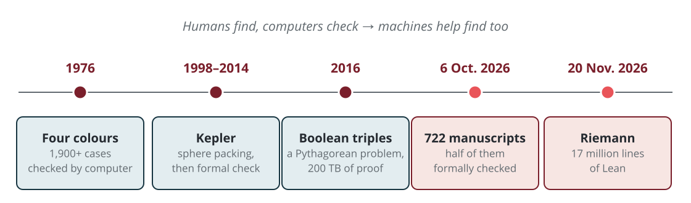
We already trust proofs that nobody has read in full. What is new: the ideas may come from the machine too.
It is not inevitable. We can require explanations, or stop what nobody can explain (comprehension audits).
A new era? Your turn
- Would you accept a medicine that works, if nobody understands why?
- Who deserves the prize: the mathematician, the model, the company, or the authors of 50 years of number theory?
- Should we keep learning what a machine does better than us?
- Who should have the right to stop an AI that improves itself?
Credits
This slideshow was created by virgilus using Quarto. It was inspired by the lectures of the Data Science and Machine Learning program, by Arthur Mensch, Zaccharie Ramzi and Hugo Richard.
Boxed diagrams and charts were made for this deck. Other images come from Wikimedia Commons and from course resources; they are credited on their slide when the source is known.
References
- Vaswani et al., Attention Is All You Need (2017)
- Anthropic, Building effective agents (2024)
- MCP, Official website
- Lean FRO and Mathlib, Lean verification of the Riemann Hypothesis (2026)
- Forecasting Research Institute, How close is recursive self-improvement? (2026)
- Stanford HAI, AI Index 2026